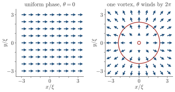
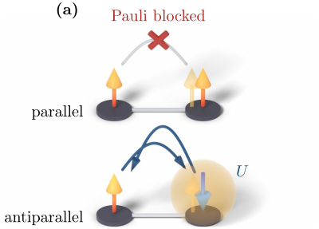

Page 3 of 12 of this session
1.3 Emergent quasiparticles and what the lattice gives us
How can a lattice of identical atoms give rise to so many different kinds of collective behavior? This is the puzzle that motivates everything that follows. In this section we arrive at a list of the emergent quasiparticles that we will look for, with the vortex of a superconductor drawn as a winding of its phase.
The phenomenology of the materials of Section 1.2 is built from the same four ingredients, which are electrons, protons, neutrons and photons, and a single isolated atom shows none of it. In a single atom there is no fractionalization, there are no vortices, no magnons and no spinons. Before we build the formalism to answer the question above, it is useful to know what we are looking for. Some of the emergent quasiparticles that we will meet are the following.
Phonons. These are lattice vibrations, and they are the simplest quasiparticle of all, since they exist also in classical physics.
Magnons. These are spin-1 excitations of a magnetically ordered state, which are small precessions of the local moment that carry energy and spin through the material. Note that magnons can propagate also in a Mott insulator, where charge cannot propagate, so a magnetic insulator can still carry spin and heat.
Spinons. These are spin-1/2 excitations without charge that live in quantum magnets, where time-reversal symmetry is not broken. In some sense a spinon is only the spin part of an electron, without its charge part, and this is an example of electron fractionalization that is called spin-charge separation.
Dirac fermions. These are electrons with a linear dispersion that look massless. They do not come from interactions but from the geometry of the lattice, as in the honeycomb lattice of graphene.
Vortices. These are topological defects in the phase of a superconductor, and they are dynamical quasiparticles themselves. The same superconducting phase gives rise to flux quantization and to the Josephson effect. These two effects were the basis of some of our most precise measurements of the ratio between Planck’s constant and the electron charge, and now both constants have exact values in SI units.

Two more emergent particles belong to this list. The first are Majorana fermions, which we meet in Session 5 in connection with chiral superconductors. The second are anyons, which belong to the fractional quantum Hall effect of Session 4, and we mention them here only so that the name is familiar.

Magnons carry spin through yttrium iron garnet, YIG, which is a magnetic insulator where the large band gap does not allow the electrons to move. The magnons are excited and detected fully electrically, and they carry spin angular momentum through YIG over distances as large as \(40\) μm. In a thin film of \(200\) nm at room temperature, the magnon spin diffusion length is \(9.4\pm0.6\) μm. The measurement is in this article.
Breaking one singlet pair of a quantum magnet leaves two unpaired sites. What is the spin of each one?
Show the answers
- A. ✗ False
This is false. Breaking a singlet creates a triplet excitation with total spin \(1\). Two sites with spin zero would give a total spin of zero, so they cannot account for it.
- B. ✓ True
This is true. Each unpaired site holds one electron, so its spin is \(1/2\). The two of them together give the spin \(1\) of the magnon, which is why a spinon is a fraction of a magnon.
- C. ✗ False
This is false. A site with one electron has only \(S_z=\pm 1/2\), so spin one cannot sit there. Two spinons of spin one would also give a total spin of up to \(2\), more than the excitation that we created.
Spinons appear in pairs, since a singlet is broken into two unpaired sites.
Charge cannot propagate in a Mott insulator. Why can a magnetic Mott insulator still carry spin and heat?
Show the answers
- A. ✓ True
This is true. A magnon is a precession wave of the local moments. It carries spin and energy while every electron stays on its site.
- B. ✗ False
This is false. For \(U=10t\), putting a second electron on a site costs \(10t\). At a temperature well below this, which is the regime of the question, the electrons stay on their sites, and still the magnons carry spin.

Figure 6.2, one panel shown again. The cost \(U\) of a second electron on a site. A hop that puts two electrons on one site pays \(U\), and a hop between parallel spins is blocked by the Pauli principle. - C. ✗ False
This is false. Phonons are vibrations of the atoms and they carry no spin. In a Heisenberg model with the atoms fixed there are no phonons at all, and spin still propagates as a magnon.
The magnons need no motion of charge, so they exist in an insulator.
Each picture shows \(\Delta=|\Delta|e^{i\theta}\) as arrows, with the length \(|\Delta|\) and the angle \(\theta\). The positions are in units of the coherence length \(\xi\). Which picture holds a vortex inside the red loop?
Show the answers
- A. ✗ False
This is false. All the arrows point the same way, so along the red loop the phase does not change, and its winding is \(0\).
- B. ✓ True
This is true. Along the red loop the arrow turns once, so the phase winds by \(2\pi\), which is a winding of \(1\). The amplitude goes to zero at the center, which is the core of the vortex.
- C. ✗ False
This is false. The phase is \(\theta=\pi y/(4\xi)\), so it turns, but it also turns back. Along the red loop it goes up to \(0.55\pi\) at the top and down to \(-0.55\pi\) at the bottom, and its winding is \(0\). A smooth change of the arrows makes this field uniform.
Around a vortex the phase winds, and at its core the amplitude vanishes.
- Magnons are built as fluctuations of the order parameter in Section 6.13, and Section 6.15 gives their dispersion.
- Spinons come back in Section 8.2, and the parton construction of Section 8.8 writes them as fermions.
- The Dirac fermions of graphene are derived in Section 2.11.
- Flux quantization and the Josephson effect are in Section 5.2, Majorana fermions in Section 5.15, and anyons in Section 4.18.